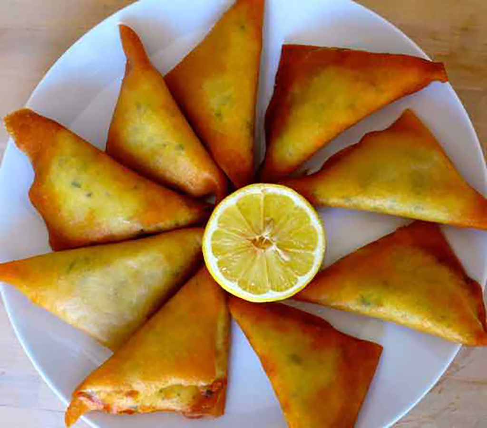

Qui suis-je ?
Je suis moi!
Qui suis-je ?
Je m'appelle Jeser Bahria, je suis un garçon de 16 ans. Ma série préférée, ce sont les TELEARABBIES (Fais défiler jusqu'à la fin pour découvrir qui ils sont !). Et je n'ai plus envie d'écrire.
Où est-ce que j'étudie?
J'étudie à l'institut supérieur Francesco Ferrara (Je ne vous le recommande pas)!

Quel est mon plat préféré ?
Mon plat préféré est le brik.
TeleArabbies
Les Telearabbies et la Grande Compétition de Couscous
Dans le lointain désert de TubbaLandia, entre les dunes dorées et les palmiers dansants, vivaient les Telearabbies :
- Tinky Winky (qui portait une djellaba violette)
- Dipsy (avec un turban vert super stylé)
- Laa-Laa (qui faisait toujours de la danse orientale avec sa tunique jaune)
- Po (rouge comme la harissa, toujours prête à faire des bêtises)
Un jour, le Soleil-bébé, qui ici avait une longue barbe et disait toujours "Yalla Yalla !", annonça un grand défi :
📢 "Aujourd’hui, celui qui fera le meilleur couscous sera couronné Roi ou Reine de TubbaLandia !"
Tous les Telearabbies se mirent au travail :
🍆 Tinky Winky voulait un couscous tout violet, mais il utilisa trop d’aubergines… et son plat devint une soupe bizarre !
🍖 Dipsy voulait ajouter beaucoup d’agneau, mais il le laissa brûler en faisant de la dabke au lieu de surveiller !
🥕 Laa-Laa se concentra sur les légumes, mais elle en mit tellement que son couscous ressemblait à une énorme salade !
🌶 Po, elle, décida d’ajouter trop de harissa… et quand tout le monde goûta son couscous, ils commencèrent à cracher du feu comme des dragons ! 🔥🐉
Le Soleil-bébé riait tellement qu’il faillit se coucher plus tôt que prévu ! Finalement, ils gagnèrent tous parce qu’ils avaient apporté du chaos et de la joie, comme toujours ! 🎉
Sous un ciel étoilé, ils dansèrent, mangèrent et dirent tous ensemble :
✨ "Tayeb ! Tayeb ! (Délicieux ! Délicieux !)"* ✨
Mais soudain… Po trébucha avec son couscous ultra-épicé et fit tomber un énorme sac de harissa sur un tas de charbon brûlant…
💥💥💥💣🔥 BOOOOM ! Toute TubbaLandia explosa dans un nuage de couscous et d’épices !
FIN.
Contact
Contactez-moi avec
Whatsapp - 324 887 5086Courriel- elettronic - jeserbahria08@gmail.com